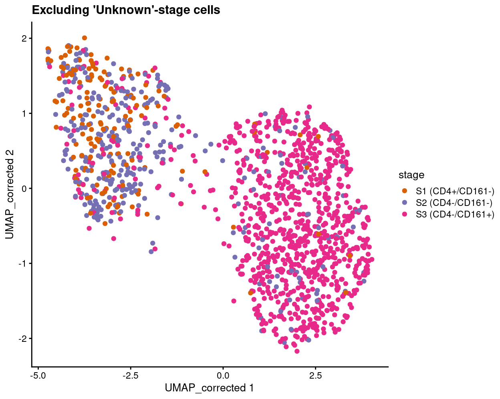

Setup
Need to start from this SCE object in order to have consistency with Williams analyses.
Show code
# Some useful gene sets
mito_set <- rownames(sce)[any(rowData(sce)$ENSEMBL.SEQNAME == "MT")]
ribo_set <- grep("^RP(S|L)", rownames(sce), value = TRUE)
# NOTE: A more curated approach for identifying ribosomal protein genes
# (https://github.com/Bioconductor/OrchestratingSingleCellAnalysis-base/blob/ae201bf26e3e4fa82d9165d8abf4f4dc4b8e5a68/feature-selection.Rmd#L376-L380)
library(msigdbr)
c2_sets <- msigdbr(species = "Homo sapiens", category = "C2")
ribo_set <- union(
ribo_set,
c2_sets[c2_sets$gs_name == "KEGG_RIBOSOME", ]$gene_symbol)
ribo_set <- intersect(ribo_set, rownames(sce))
sex_set <- rownames(sce)[any(rowData(sce)$ENSEMBL.SEQNAME %in% c("X", "Y"))]
pseudogene_set <- rownames(sce)[
any(grepl("pseudogene", rowData(sce)$ENSEMBL.GENEBIOTYPE))]
protein_coding_gene_set <- rownames(sce)[
any(grepl("protein_coding", rowData(sce)$ENSEMBL.GENEBIOTYPE))]
Obtaining pseudotime orderings
Analysis using slingshot; see https://bioconductor.org/books/release/OSCA/trajectory-analysis.html#principal-curves for inspiration.
Show code
library(slingshot)
# NOTE: Can't directly use `slingshot(sce, reducedDim = "corrected")` because
# it gives an error:
# "Error in solve.default(s1 + s2) :
# system is computationally singular: reciprocal condition
# number = 2.91591e-17"
# This is similar to previously reported issues
# (https://github.com/kstreet13/slingshot/issues/87 and
# https://github.com/kstreet13/slingshot/issues/35) for which a hacky
# workaround is to drop the last dimension.
rd <- reducedDim(sce, "corrected")
reducedDim(sce, "corrected_1") <- rd[, seq_len(ncol(rd) - 1)]
sce <- slingshot(sce, reducedDim = "corrected_1")
embedded <- embedCurves(sce, "UMAP_corrected")
embedded <- slingCurves(embedded)[[1]] # only 1 path.
embedded <- data.frame(embedded$s[embedded$ord, ])
Show code
plotReducedDim(
sce,
dimred = "UMAP_corrected",
colour_by = "slingPseudotime_1",
point_alpha = 1,
point_size = 0.5) +
geom_path(data = embedded, aes(x = Dim.1, y = Dim.2), size = 1.2) +
plotReducedDim(
sce,
dimred = "UMAP_corrected",
colour_by = "stage",
point_alpha = 1,
point_size = 0.5) +
plotReducedDim(
sce,
dimred = "UMAP_corrected",
colour_by = "tissue",
point_alpha = 1,
point_size = 0.5) +
plotReducedDim(
sce,
dimred = "UMAP_corrected",
colour_by = "cluster",
point_alpha = 1,
point_size = 0.5) +
plot_layout(ncol = 2)
Changes along a trajectory
We only test genes that are detected in at least 10 cells (\(n\) = 14,256).
We use methods from the tradeSeq R/Bioconductor package.
Show code
library(tradeSeq)
nonna.pseudo <- sce_pseudo$slingPseudotime_1
nonna.pseudo[is.na(nonna.pseudo)] <- 0
cell.weights <- !is.na(sce_pseudo$slingPseudotime_1)
storage.mode(cell.weights) <- "numeric"
We perform a statistical test to check for DE between the starting point and the end stage of the trajectory.
Show code
svet <- startVsEndTest(fit)
svet <- svet[order(svet$pvalue), ]
svet$FDR <- p.adjust(svet$pvalue, method = "BH")
svet$ENTREZID <- sapply(
rowData(sce[rownames(svet), ])$NCBI.ENTREZID,
"[[",
1)
svet$logFC <- svet$logFClineage1
write.csv(
svet[, c("logFC", "pvalue", "FDR")],
file.path(outdir, "tradeSeq_results.DEGs.csv"),
row.names = TRUE,
quote = FALSE)
pseudotime_degs <- list(
up_at_start =
sapply(
rowData(
sce[rownames(svet[svet$FDR < 0.05 & svet$logFC < 0, ]), ])$NCBI.ENTREZID,
"[[",
1),
up_at_end = sapply(
rowData(
sce[rownames(svet[svet$FDR < 0.05 & svet$logFC > 0, ]), ])$NCBI.ENTREZID,
"[[",
1))
There are 653 and 164 genes that are significantly upregulated (\(FDR < 0.05\)) at the start and end of the trajectory, respectively. CSV files of the results are available from output/trajectory/. Figures 1 and 2 highlight some of these genes.
Show code
plotHeatmap(
sce,
order_columns_by = "slingPseudotime_1",
colour_columns_by = c("stage", "tissue"),
features = head(
setdiff(
rownames(svet[svet$FDR < 0.05 & svet$logFC < 0, ]),
mito_set),
50),
center = TRUE,
symmetric = TRUE,
zlim = c(-3, 3),
color = hcl.colors(101, "Blue-Red 3"),
fontsize = 6,
main = "Up at start")

Figure 1: Selected genes that are upregulated at the start of the inferred trajectory.
Show code
plotHeatmap(
sce,
order_columns_by = "slingPseudotime_1",
colour_columns_by = c("stage", "tissue"),
features = head(
setdiff(
rownames(svet[svet$FDR < 0.05 & svet$logFC > 0, ]),
mito_set),
50),
center = TRUE,
symmetric = TRUE,
zlim = c(-3, 3),
color = hcl.colors(101, "Blue-Red 3"),
fontsize = 6,
main = "Up at end")

Figure 2: Selected genes that are upregulated at the end of the inferred trajectory.
Gene set testing
We opt to use the tradeSeq results and seek to identify gene sets that are differentially expressed with respect to the trajectory.
goana
We use the goana() function from the limma R/Bioconductor package to test for over-representation of gene ontology (GO) terms in each of the up_at_start and up_at_end DEG lists.
CSV files of the results are available from output/trajectory/. An example of the results are shown below, here ordered by P.up_at_end to highlight GO terms that are enriched in the up_at_end DEG list.
Show code
topGO(go, sort = "up_at_end") %>%
knitr::kable(
caption = '`goana()` produces a table with a row for each GO term and the following columns: **Term** (GO term); **Ont** (ontology that the GO term belongs to. Possible values are "BP", "CC" and "MF"); **N** (number of genes in the GO term); **up_at_start** (number of `up_at_start`-regulated differentially expressed genes); **up_at_end** (number of `up_at_end`-regulated differentially expressed genes); **P.up_at_start** (p-value for over-representation of GO term in `up_at_start`-regulated genes); **P.up_at_end** (p-value for over-representation of GO term in `up_at_end`-regulated genes)')
| Term | Ont | N | up_at_start | up_at_end | P.up_at_start | P.up_at_end | |
|---|---|---|---|---|---|---|---|
| GO:0002376 | immune system process | BP | 3287 | 77 | 61 | 0.2472586 | 0 |
| GO:0002682 | regulation of immune system process | BP | 1646 | 44 | 42 | 0.0878162 | 0 |
| GO:0048583 | regulation of response to stimulus | BP | 4403 | 105 | 71 | 0.1483313 | 0 |
| GO:0050896 | response to stimulus | BP | 9398 | 211 | 109 | 0.2641959 | 0 |
| GO:0050776 | regulation of immune response | BP | 1027 | 24 | 32 | 0.3835778 | 0 |
| GO:0006955 | immune response | BP | 2306 | 43 | 48 | 0.8748847 | 0 |
| GO:0051716 | cellular response to stimulus | BP | 7748 | 174 | 96 | 0.2971464 | 0 |
| GO:0042110 | T cell activation | BP | 483 | 17 | 22 | 0.0355550 | 0 |
| GO:0046649 | lymphocyte activation | BP | 765 | 24 | 27 | 0.0462375 | 0 |
| GO:0002684 | positive regulation of immune system process | BP | 1110 | 31 | 32 | 0.0906153 | 0 |
| GO:0002483 | antigen processing and presentation of endogenous peptide antigen | BP | 17 | 0 | 7 | 1.0000000 | 0 |
| GO:0019885 | antigen processing and presentation of endogenous peptide antigen via MHC class I | BP | 17 | 0 | 7 | 1.0000000 | 0 |
| GO:0048584 | positive regulation of response to stimulus | BP | 2465 | 62 | 48 | 0.1202028 | 0 |
| GO:0045321 | leukocyte activation | BP | 1321 | 39 | 34 | 0.0316194 | 0 |
| GO:0001775 | cell activation | BP | 1482 | 41 | 35 | 0.0650995 | 0 |
| GO:0019883 | antigen processing and presentation of endogenous antigen | BP | 24 | 2 | 7 | 0.0948227 | 0 |
| GO:0007165 | signal transduction | BP | 6272 | 130 | 80 | 0.7521839 | 0 |
| GO:0002520 | immune system development | BP | 1024 | 31 | 28 | 0.0391822 | 0 |
| GO:0046651 | lymphocyte proliferation | BP | 283 | 10 | 15 | 0.0902015 | 0 |
| GO:0032943 | mononuclear cell proliferation | BP | 286 | 10 | 15 | 0.0950264 | 0 |
kegga
We use the kegga() function from the limma R/Bioconductor package to test for over-representation of KEGG pathways in each of the up_at_start and up_at_end DEG lists.
CSV files of the results are available from output/trajectory/. An example of the results are shown below, here ordered by P.up_at_end to highlight GO terms that are enriched in the up_at_end DEG list.
Show code
topKEGG(kegg, sort = "up_at_end") %>%
knitr::kable(
caption = '`kegga()` produces a table with a row for each KEGG pathway ID and the following columns: **Pathway** (KEGG pathway); **N** (number of genes in the GO term);; **up_at_start** (number of `up_at_start`-regulated differentially expressed genes); **up_at_end** (number of `up_at_end`-regulated differentially expressed genes); **P.up_at_start** (p-value for over-representation of KEGG pathway in `up_at_start`-regulated genes); **P.up_at_end** (p-value for over-representation of KEGG pathway in `up_at_end`-regulated genes)')
| Pathway | N | up_at_start | up_at_end | P.up_at_start | P.up_at_end | |
|---|---|---|---|---|---|---|
| path:hsa04612 | Antigen processing and presentation | 78 | 2 | 9 | 0.6381545 | 0.0000000 |
| path:hsa05170 | Human immunodeficiency virus 1 infection | 212 | 5 | 12 | 0.7000293 | 0.0000001 |
| path:hsa05169 | Epstein-Barr virus infection | 202 | 6 | 11 | 0.4846459 | 0.0000005 |
| path:hsa05163 | Human cytomegalovirus infection | 225 | 3 | 11 | 0.9507946 | 0.0000014 |
| path:hsa04514 | Cell adhesion molecules | 149 | 2 | 9 | 0.9206000 | 0.0000025 |
| path:hsa05332 | Graft-versus-host disease | 42 | 0 | 5 | 1.0000000 | 0.0000193 |
| path:hsa05416 | Viral myocarditis | 60 | 0 | 5 | 1.0000000 | 0.0001110 |
| path:hsa04145 | Phagosome | 152 | 6 | 7 | 0.2415877 | 0.0002004 |
| path:hsa05330 | Allograft rejection | 38 | 0 | 4 | 1.0000000 | 0.0002277 |
| path:hsa04940 | Type I diabetes mellitus | 43 | 0 | 4 | 1.0000000 | 0.0003694 |
| path:hsa05166 | Human T-cell leukemia virus 1 infection | 222 | 4 | 8 | 0.8660481 | 0.0003704 |
| path:hsa04650 | Natural killer cell mediated cytotoxicity | 131 | 1 | 6 | 0.9750164 | 0.0006052 |
| path:hsa05320 | Autoimmune thyroid disease | 53 | 0 | 4 | 1.0000000 | 0.0008253 |
| path:hsa05167 | Kaposi sarcoma-associated herpesvirus infection | 194 | 4 | 7 | 0.7874172 | 0.0008754 |
| path:hsa04218 | Cellular senescence | 156 | 2 | 6 | 0.9324198 | 0.0015047 |
| path:hsa05168 | Herpes simplex virus 1 infection | 497 | 9 | 11 | 0.9366117 | 0.0018180 |
| path:hsa04668 | TNF signaling pathway | 112 | 1 | 5 | 0.9571741 | 0.0019787 |
| path:hsa05140 | Leishmaniasis | 77 | 0 | 4 | 1.0000000 | 0.0033036 |
| path:hsa04144 | Endocytosis | 252 | 5 | 7 | 0.8297867 | 0.0038920 |
| path:hsa04210 | Apoptosis | 136 | 6 | 5 | 0.1724547 | 0.0045822 |
camera
We use the cameraPR() function1 from the limma R/Bioconductor package to test whether a set of genes is highly ranked relative to other genes in terms of differential expression, accounting for inter-gene correlation. Specifically, we test using gene sets from MSigDB, namely:
- H: hallmark gene sets are coherently expressed signatures derived by aggregating many MSigDB gene sets to represent well-defined biological states or processes.
- C2: curated gene sets from online pathway databases, publications in PubMed, and knowledge of domain experts.
- C7: immunologic signature gene sets represent cell states and perturbations within the immune system.
Show code
# NOTE: Using BiocFileCache to avoid re-downloading these gene sets everytime
# the report is rendered.
library(BiocFileCache)
bfc <- BiocFileCache()
# NOTE: Creating list of gene sets in this slightly convoluted way so that each
# gene set name is prepended by its origin (e.g. H, C2, or C7).
msigdb <- do.call(
c,
list(
H = readRDS(
bfcrpath(
bfc,
"http://bioinf.wehi.edu.au/MSigDB/v7.1/Hs.h.all.v7.1.entrez.rds")),
C2 = readRDS(
bfcrpath(
bfc,
"http://bioinf.wehi.edu.au/MSigDB/v7.1/Hs.c2.all.v7.1.entrez.rds")),
C7 = readRDS(
bfcrpath(
bfc,
"http://bioinf.wehi.edu.au/MSigDB/v7.1/Hs.c7.all.v7.1.entrez.rds"))))
# NOTE: Using the signed Wald statistic as the statistic, following by
# analogy what Gordon recommends
# (https://support.bioconductor.org/p/112937/#112938).
svet$statistic <- svet$waldStat * sign(svet$logFClineage1)
y_idx <- ids2indices(msigdb, id = svet$ENTREZID)
cam <- cameraPR(
statistic = setNames(svet$statistic, svet$ENTREZID),
index = y_idx,
use.ranks = FALSE)
gzout <- gzfile(
description = file.path(outdir, "tradeSeq_results.camera.csv.gz"),
open = "wb")
write.csv(
cam,
gzout,
row.names = TRUE)
close(gzout)
CSV files of the results are available from output/trajectory/. An example of the results are shown below, here filtered to highlight those gene sets with Direction = Up meaning up_at_end.
Show code
head(cam[cam$Direction == "Up", ]) %>%
knitr::kable(
caption = '`camera()` produces a table with a row for each gene set (prepended by which MSigDB collection it comes from) and the following columns: **NGenes** (number of genes in set); **Direction** (direction of change, `Up` = `up_at_end` and `Down` = `up_at_start`); **PValue** (two-tailed p-value); **FDR** (Benjamini and Hochberg FDR adjusted p-value).')
| NGenes | Direction | PValue | FDR | |
|---|---|---|---|---|
| C2.WUNDER_INFLAMMATORY_RESPONSE_AND_CHOLESTEROL_DN | 3 | Up | 0 | 0 |
| C2.REACTOME_ENDOSOMAL_VACUOLAR_PATHWAY | 9 | Up | 0 | 0 |
| C2.KUROKAWA_LIVER_CANCER_EARLY_RECURRENCE_DN | 6 | Up | 0 | 0 |
| C2.BIOCARTA_MHC_PATHWAY | 12 | Up | 0 | 0 |
| C2.REACTOME_NEF_MEDIATED_DOWNREGULATION_OF_MHC_CLASS_I_COMPLEX_CELL_SURFACE_EXPRESSION | 8 | Up | 0 | 0 |
| C2.BIOCARTA_CTL_PATHWAY | 12 | Up | 0 | 0 |
Visualisation
Show code
term <- "C2.REACTOME_INTERFERON_ALPHA_BETA_SIGNALING"
library(org.Hs.eg.db)
key <- msigdb[[term]]
tmp <- AnnotationDbi::select(
org.Hs.eg.db,
key = key,
columns = "SYMBOL",
keytype = "ENTREZID")
y_index <- ids2indices(msigdb[[term]], svet$ENTREZID)
We can visualise the expression of the genes in any given set using a barcode plot. Such figures are often included in publications.
Figure 3 gives an example showing the expression of genes in the C2.REACTOME_INTERFERON_ALPHA_BETA_SIGNALING MSigDB gene set.
Show code
barcodeplot(statistics = svet$statistic, index = y_index[[1]])
![Barcode plot of genes in MSigDB set `C2.REACTOME_INTERFERON_ALPHA_BETA_SIGNALING`. Genes are represented by bars and are ranked from left to right by increasing signed Wald statistic from the trajectory DE analysis. This forms the barcode-like pattern. The line (or *worm*) above the barcode shows the relative local enrichment of the vertical bars in each part of the plot. The dotted horizontal line indicates neutral enrichment; the worm above the dotted line shows enrichment while the worm below the dotted line shows depletion.](C094_Pellicci.single-cell.trajectory_files/figure-html5/gsea-vis-1.png)
Figure 3: Barcode plot of genes in MSigDB set C2.REACTOME_INTERFERON_ALPHA_BETA_SIGNALING. Genes are represented by bars and are ranked from left to right by increasing signed Wald statistic from the trajectory DE analysis. This forms the barcode-like pattern. The line (or worm) above the barcode shows the relative local enrichment of the vertical bars in each part of the plot. The dotted horizontal line indicates neutral enrichment; the worm above the dotted line shows enrichment while the worm below the dotted line shows depletion.
Figures for paper
Note that exact figure numbers may change.
Show code
# Some useful colours
plate_number_colours <- setNames(
unique(sce$colours$plate_number_colours),
unique(names(sce$colours$plate_number_colours)))
plate_number_colours <- plate_number_colours[levels(sce$plate_number)]
tissue_colours <- setNames(
unique(sce$colours$tissue_colours),
unique(names(sce$colours$tissue_colours)))
tissue_colours <- tissue_colours[levels(sce$tissue)]
donor_colours <- setNames(
unique(sce$colours$donor_colours),
unique(names(sce$colours$donor_colours)))
donor_colours <- donor_colours[levels(sce$donor)]
stage_colours <- setNames(
unique(sce$colours$stage_colours),
unique(names(sce$colours$stage_colours)))
stage_colours <- stage_colours[levels(sce$stage)]
group_colours <- setNames(
unique(sce$colours$group_colours),
unique(names(sce$colours$group_colours)))
group_colours <- group_colours[levels(sce$group)]
cluster_colours <- setNames(
unique(sce$colours$cluster_colours),
unique(names(sce$colours$cluster_colours)))
cluster_colours <- cluster_colours[levels(sce$cluster)]
Figure 5
Show code
plotReducedDim(
sce,
"UMAP_corrected",
colour_by = "stage",
point_alpha = 1) +
scale_colour_manual(values = stage_colours, name = "stage") +
ggtitle("All cells")

Show code
plotReducedDim(
sce,
"UMAP_corrected",
colour_by = "tissue",
point_alpha = 1) +
scale_colour_manual(values = tissue_colours, name = "tissue") +
ggtitle("All cells")

Show code
plotReducedDim(
sce,
dimred = "UMAP_corrected",
colour_by = "slingPseudotime_1",
point_alpha = 1) +
geom_path(data = embedded, aes(x = Dim.1, y = Dim.2), size = 1.2) +
ggtitle("All cells")
Show code
plotHeatmap(
sce,
order_columns_by = "slingPseudotime_1",
colour_columns_by = c("slingPseudotime_1", "CD4", "CD161", "stage", "tissue"),
features = c(
head(
setdiff(rownames(svet[svet$FDR < 0.05 & svet$logFC < 0, ]), mito_set),
25),
head(
setdiff(rownames(svet[svet$FDR < 0.05 & svet$logFC > 0, ]), mito_set),
25)),
center = TRUE,
symmetric = TRUE,
zlim = c(-3, 3),
color = hcl.colors(101, "Blue-Red 3"),
fontsize = 6,
main = "All cells: Selected pseudotime-associated genes",
column_annotation_colors = list(
stage = stage_colours,
tissue = tissue_colours))
Show code
plotReducedDim(
sce[, sce$stage != "Unknown"],
"UMAP_corrected",
colour_by = "stage",
point_alpha = 1) +
scale_colour_manual(values = stage_colours, name = "stage") +
ggtitle("Excluding 'Unknown'-stage cells")
Show code
plotReducedDim(
sce[, sce$stage != "Unknown"],
"UMAP_corrected",
colour_by = "tissue",
point_alpha = 1) +
scale_colour_manual(values = tissue_colours, name = "tissue") +
ggtitle("Excluding 'Unknown'-stage cells")
Show code
plotReducedDim(
sce[, sce$stage != "Unknown"],
dimred = "UMAP_corrected",
colour_by = "slingPseudotime_1",
point_alpha = 1) +
geom_path(data = embedded, aes(x = Dim.1, y = Dim.2), size = 1.2) +
ggtitle("Excluding 'Unknown'-stage cells")

Show code
plotHeatmap(
sce[, sce$stage != "Unknown"],
order_columns_by = "slingPseudotime_1",
colour_columns_by = c("slingPseudotime_1", "CD4", "CD161", "stage", "tissue"),
features = c(
head(
setdiff(rownames(svet[svet$FDR < 0.05 & svet$logFC < 0, ]), mito_set),
25),
head(
setdiff(rownames(svet[svet$FDR < 0.05 & svet$logFC > 0, ]), mito_set),
25)),
center = TRUE,
symmetric = TRUE,
zlim = c(-3, 3),
color = hcl.colors(101, "Blue-Red 3"),
fontsize = 6,
main = "Excluding 'Unknown'-stage cells: Selected pseudotime-associated genes",
column_annotation_colors = list(
stage = stage_colours[levels(factor(sce[, sce$stage != "Unknown"]$stage))],
tissue = tissue_colours))
DEG heatmaps
Heatmaps sorted by CD4 and CD161 FACS expression showing the DEGs across the gamma delta T cell stages ordered by decreasing either CD4 or KLRB1. This is an example, but, as I explained to Dan, I dont think these are very useful plots.
Show code
tmp <- sce[, sce$group %in% c("Thymus.S1 (CD4+/CD161-)", "Thymus.S2 (CD4-/CD161-)", "Thymus.S3 (CD4-/CD161+)", "Blood.S3 (CD4-/CD161+)")]
tmp$group <- factor(
tmp$group,
c("Thymus.S1 (CD4+/CD161-)", "Thymus.S2 (CD4-/CD161-)", "Thymus.S3 (CD4-/CD161+)", "Blood.S3 (CD4-/CD161+)"))
x <- read.csv(
here("output/DEGs/excluding_donors_1-3/Thymus.S3_vs_Thymus.S1.aggregated_tech_reps.DEGs.csv.gz"))
Show code
plotHeatmap(
tmp,
order_columns_by = c("group", "CD4"),
colour_columns_by = c("CD4", "group"),
features = head(x[x$FDR < 0.05, "ENSEMBL.SYMBOL"], 50),
center = TRUE,
symmetric = TRUE,
zlim = c(-3, 3),
color = hcl.colors(101, "Blue-Red 3"),
fontsize = 6,
main = "Mini-bulk DEGs: Thymus.S3 vs. Thymus.S1",
column_annotation_colors = list(group = group_colours[levels(tmp$group)]))
Show code
plotHeatmap(
tmp,
order_columns_by = c("group", "CD161"),
colour_columns_by = c("CD161", "group"),
features = head(x[x$FDR < 0.05, "ENSEMBL.SYMBOL"], 50),
center = TRUE,
symmetric = TRUE,
zlim = c(-3, 3),
color = hcl.colors(101, "Blue-Red 3"),
fontsize = 6,
main = "Mini-bulk DEGs: Thymus.S3 vs. Thymus.S1",
column_annotation_colors = list(group = group_colours[levels(tmp$group)]))

Mock figure sent to Dan and co (2021-09-09)
Show code
dir.create(here("output/figures"))
p1 <- plotReducedDim(
sce[, sce$stage != "Unknown"],
"UMAP_corrected",
colour_by = "stage",
point_alpha = 1) +
scale_colour_manual(values = stage_colours, name = "stage")
ggsave(here("output/figures/Fig5a.pdf"), p1, width = 6, height = 5)
p2 <- plotReducedDim(
sce[, sce$stage != "Unknown"],
"UMAP_corrected",
colour_by = "tissue",
point_alpha = 1) +
scale_colour_manual(values = tissue_colours, name = "tissue")
ggsave(here("output/figures/Fig5b.pdf"), p2, width = 6, height = 5)
p3 <- plotReducedDim(
sce[, sce$stage != "Unknown"],
dimred = "UMAP_corrected",
colour_by = "slingPseudotime_1",
point_alpha = 1) +
geom_path(data = embedded, aes(x = Dim.1, y = Dim.2), size = 1.2)
ggsave(here("output/figures/Fig5c.pdf"), p3, width = 6, height = 5)
p4 <- plotHeatmap(
sce[, sce$stage != "Unknown"],
order_columns_by = "slingPseudotime_1",
colour_columns_by = c("slingPseudotime_1", "CD4", "CD161", "stage", "tissue"),
features = c(
head(
setdiff(rownames(svet[svet$FDR < 0.05 & svet$logFC < 0, ]), mito_set),
50),
head(
setdiff(rownames(svet[svet$FDR < 0.05 & svet$logFC > 0, ]), mito_set),
50)),
center = TRUE,
symmetric = TRUE,
zlim = c(-3, 3),
color = hcl.colors(101, "Blue-Red 3"),
fontsize = 5,
column_annotation_colors = list(
stage = stage_colours[levels(factor(sce[, sce$stage != "Unknown"]$stage))],
tissue = tissue_colours),
silent = TRUE)
ggsave(here("output/figures/Fig5d.pdf"), p4$gtable, width = 6, height = 8)
p4a <- plotHeatmap(
sce[, sce$stage != "Unknown"],
order_columns_by = c("stage", "slingPseudotime_1"),
colour_columns_by = c("stage", "slingPseudotime_1", "CD4", "CD161", "tissue"),
features = c(
head(
setdiff(rownames(svet[svet$FDR < 0.05 & svet$logFC < 0, ]), mito_set),
50),
head(
setdiff(rownames(svet[svet$FDR < 0.05 & svet$logFC > 0, ]), mito_set),
50)),
center = TRUE,
symmetric = TRUE,
zlim = c(-3, 3),
color = hcl.colors(101, "Blue-Red 3"),
fontsize = 5,
# main = "Excluding 'Unknown'-stage cells: Selected pseudotime-associated genes",
column_annotation_colors = list(
stage = stage_colours[levels(factor(sce[, sce$stage != "Unknown"]$stage))],
tissue = tissue_colours),
silent = TRUE)
ggsave(here("output/figures/Fig5d_alternative.pdf"), p4a$gtable, width = 6, height = 8)
Initial proposal:
Show code
p1 + p2 + p3 + p4$gtable +
plot_annotation(
title = "Summary of scRNA-seq data",
subtitle = "Excluding 'Unknown'-stage cells",
tag_levels = "a")
Alternative:
Show code
p1 + p2 + p3 + p4a$gtable +
plot_annotation(
title = "Summary of scRNA-seq data",
subtitle = "Excluding 'Unknown'-stage cells",
tag_levels = "a")

Additional information
The following are available on request:
- Full CSV tables of any data presented.
- PDF/PNG files of any static plots.
Session info
Show code
sessioninfo::session_info()
Session info
setting value
version R version 4.0.3 (2020-10-10)
os CentOS Linux 7 (Core)
system x86_64, linux-gnu
ui X11
language (EN)
collate en_US.UTF-8
ctype en_US.UTF-8
tz Australia/Melbourne
date 2021-10-01
Packages
! package * version date lib source
P AnnotationDbi * 1.52.0 2020-10-27 [?] Bioconductor
P ape 5.5 2021-04-25 [?] CRAN (R 4.0.5)
P assertthat 0.2.1 2019-03-21 [?] CRAN (R 4.0.0)
P beachmat 2.6.4 2020-12-20 [?] Bioconductor
P beeswarm 0.3.1 2021-03-07 [?] CRAN (R 4.0.3)
P Biobase * 2.50.0 2020-10-27 [?] Bioconductor
P BiocFileCache * 1.14.0 2020-10-27 [?] Bioconductor
P BiocGenerics * 0.36.0 2020-10-27 [?] Bioconductor
P BiocManager 1.30.12 2021-03-28 [?] CRAN (R 4.0.3)
P BiocNeighbors 1.8.2 2020-12-07 [?] Bioconductor
P BiocParallel 1.24.1 2020-11-06 [?] Bioconductor
P BiocSingular 1.6.0 2020-10-27 [?] Bioconductor
P BiocStyle 2.18.1 2020-11-24 [?] Bioconductor
P bit 4.0.4 2020-08-04 [?] CRAN (R 4.0.0)
P bit64 4.0.5 2020-08-30 [?] CRAN (R 4.0.0)
P bitops 1.0-6 2013-08-17 [?] CRAN (R 4.0.0)
P blob 1.2.1 2020-01-20 [?] CRAN (R 4.0.0)
P bslib 0.2.4 2021-01-25 [?] CRAN (R 4.0.3)
P cachem 1.0.4 2021-02-13 [?] CRAN (R 4.0.3)
P cli 2.4.0 2021-04-05 [?] CRAN (R 4.0.3)
P cluster 2.1.0 2019-06-19 [3] CRAN (R 4.0.3)
P colorspace 2.0-0 2020-11-11 [?] CRAN (R 4.0.3)
P combinat 0.0-8 2012-10-29 [?] CRAN (R 4.0.3)
P cowplot 1.1.1 2020-12-30 [?] CRAN (R 4.0.3)
P crayon 1.4.1 2021-02-08 [?] CRAN (R 4.0.3)
P curl 4.3 2019-12-02 [?] CRAN (R 4.0.0)
P DBI 1.1.1 2021-01-15 [?] CRAN (R 4.0.3)
P dbplyr * 2.1.0 2021-02-03 [?] CRAN (R 4.0.3)
P DDRTree 0.1.5 2017-04-30 [?] CRAN (R 4.0.3)
P DelayedArray 0.16.3 2021-03-24 [?] Bioconductor
P DelayedMatrixStats 1.12.3 2021-02-03 [?] Bioconductor
P densityClust 0.3 2017-10-24 [?] CRAN (R 4.0.3)
P digest 0.6.27 2020-10-24 [?] CRAN (R 4.0.2)
P distill 1.2 2021-01-13 [?] CRAN (R 4.0.3)
P docopt 0.7.1 2020-06-24 [?] CRAN (R 4.0.3)
P downlit 0.2.1 2020-11-04 [?] CRAN (R 4.0.3)
P dplyr 1.0.5 2021-03-05 [?] CRAN (R 4.0.3)
P edgeR 3.32.1 2021-01-14 [?] Bioconductor
P ellipsis 0.3.1 2020-05-15 [?] CRAN (R 4.0.0)
P evaluate 0.14 2019-05-28 [?] CRAN (R 4.0.0)
P fansi 0.4.2 2021-01-15 [?] CRAN (R 4.0.3)
P farver 2.1.0 2021-02-28 [?] CRAN (R 4.0.3)
P fastICA 1.2-2 2019-07-08 [?] CRAN (R 4.0.3)
P fastmap 1.1.0 2021-01-25 [?] CRAN (R 4.0.3)
P FNN 1.1.3 2019-02-15 [?] CRAN (R 4.0.0)
P generics 0.1.0 2020-10-31 [?] CRAN (R 4.0.3)
P GenomeInfoDb * 1.26.4 2021-03-10 [?] Bioconductor
P GenomeInfoDbData 1.2.4 2020-10-20 [?] Bioconductor
P GenomicRanges * 1.42.0 2020-10-27 [?] Bioconductor
P ggbeeswarm 0.6.0 2017-08-07 [?] CRAN (R 4.0.0)
P ggplot2 * 3.3.3 2020-12-30 [?] CRAN (R 4.0.3)
P ggrepel 0.9.1 2021-01-15 [?] CRAN (R 4.0.3)
P glue 1.4.2 2020-08-27 [?] CRAN (R 4.0.0)
P GO.db 3.12.1 2020-11-04 [?] Bioconductor
P gridExtra 2.3 2017-09-09 [?] CRAN (R 4.0.0)
P gtable 0.3.0 2019-03-25 [?] CRAN (R 4.0.0)
P here * 1.0.1 2020-12-13 [?] CRAN (R 4.0.3)
P highr 0.9 2021-04-16 [?] CRAN (R 4.0.3)
P HSMMSingleCell 1.10.0 2020-10-29 [?] Bioconductor
P htmltools 0.5.1.1 2021-01-22 [?] CRAN (R 4.0.3)
P httr 1.4.2 2020-07-20 [?] CRAN (R 4.0.0)
P igraph 1.2.6 2020-10-06 [?] CRAN (R 4.0.2)
P IRanges * 2.24.1 2020-12-12 [?] Bioconductor
P irlba 2.3.3 2019-02-05 [?] CRAN (R 4.0.0)
P jquerylib 0.1.3 2020-12-17 [?] CRAN (R 4.0.3)
P jsonlite 1.7.2 2020-12-09 [?] CRAN (R 4.0.3)
P knitr 1.33 2021-04-24 [?] CRAN (R 4.0.3)
P labeling 0.4.2 2020-10-20 [?] CRAN (R 4.0.0)
P lattice 0.20-41 2020-04-02 [3] CRAN (R 4.0.3)
P lifecycle 1.0.0 2021-02-15 [?] CRAN (R 4.0.3)
P limma * 3.46.0 2020-10-27 [?] Bioconductor
P locfit 1.5-9.4 2020-03-25 [?] CRAN (R 4.0.0)
P magrittr 2.0.1 2020-11-17 [?] CRAN (R 4.0.3)
P Matrix 1.2-18 2019-11-27 [3] CRAN (R 4.0.3)
P MatrixGenerics * 1.2.1 2021-01-30 [?] Bioconductor
P matrixStats * 0.58.0 2021-01-29 [?] CRAN (R 4.0.3)
P memoise 2.0.0 2021-01-26 [?] CRAN (R 4.0.3)
P mgcv 1.8-33 2020-08-27 [3] CRAN (R 4.0.3)
P monocle 2.18.0 2020-10-27 [?] Bioconductor
P msigdbr * 7.2.1 2020-10-02 [?] CRAN (R 4.0.2)
P munsell 0.5.0 2018-06-12 [?] CRAN (R 4.0.0)
P nlme 3.1-149 2020-08-23 [3] CRAN (R 4.0.3)
P org.Hs.eg.db * 3.12.0 2020-10-20 [?] Bioconductor
P patchwork * 1.1.1 2020-12-17 [?] CRAN (R 4.0.3)
P pbapply 1.4-3 2020-08-18 [?] CRAN (R 4.0.3)
P pheatmap 1.0.12 2019-01-04 [?] CRAN (R 4.0.0)
P pillar 1.5.1 2021-03-05 [?] CRAN (R 4.0.3)
P pkgconfig 2.0.3 2019-09-22 [?] CRAN (R 4.0.0)
P plyr 1.8.6 2020-03-03 [?] CRAN (R 4.0.0)
P princurve * 2.1.6 2021-01-18 [?] CRAN (R 4.0.3)
P purrr 0.3.4 2020-04-17 [?] CRAN (R 4.0.0)
P qlcMatrix 0.9.7 2018-04-20 [?] CRAN (R 4.0.3)
P R6 2.5.0 2020-10-28 [?] CRAN (R 4.0.2)
P RANN 2.6.1 2019-01-08 [?] CRAN (R 4.0.0)
P rappdirs 0.3.3 2021-01-31 [?] CRAN (R 4.0.3)
P RColorBrewer 1.1-2 2014-12-07 [?] CRAN (R 4.0.0)
P Rcpp 1.0.6 2021-01-15 [?] CRAN (R 4.0.3)
P RCurl 1.98-1.3 2021-03-16 [?] CRAN (R 4.0.3)
P reshape2 1.4.4 2020-04-09 [?] CRAN (R 4.0.0)
P rlang 0.4.11 2021-04-30 [?] CRAN (R 4.0.5)
P rmarkdown 2.7 2021-02-19 [?] CRAN (R 4.0.3)
P rprojroot 2.0.2 2020-11-15 [?] CRAN (R 4.0.3)
P RSQLite 2.2.5 2021-03-27 [?] CRAN (R 4.0.3)
P rsvd 1.0.3 2020-02-17 [?] CRAN (R 4.0.0)
P Rtsne 0.15 2018-11-10 [?] CRAN (R 4.0.0)
P S4Vectors * 0.28.1 2020-12-09 [?] Bioconductor
P sass 0.3.1 2021-01-24 [?] CRAN (R 4.0.3)
P scales 1.1.1 2020-05-11 [?] CRAN (R 4.0.0)
P scater * 1.18.6 2021-02-26 [?] Bioconductor
P scuttle 1.0.4 2020-12-17 [?] Bioconductor
P sessioninfo 1.1.1 2018-11-05 [?] CRAN (R 4.0.0)
P SingleCellExperiment * 1.12.0 2020-10-27 [?] Bioconductor
P slam 0.1-48 2020-12-03 [?] CRAN (R 4.0.3)
P slingshot * 1.8.0 2020-10-27 [?] Bioconductor
P sparseMatrixStats 1.2.1 2021-02-02 [?] Bioconductor
P sparsesvd 0.2 2019-07-15 [?] CRAN (R 4.0.3)
P stringi 1.7.3 2021-07-16 [?] CRAN (R 4.0.3)
P stringr 1.4.0 2019-02-10 [?] CRAN (R 4.0.0)
P SummarizedExperiment * 1.20.0 2020-10-27 [?] Bioconductor
P tibble 3.1.0 2021-02-25 [?] CRAN (R 4.0.3)
P tidyselect 1.1.0 2020-05-11 [?] CRAN (R 4.0.0)
P tradeSeq * 1.4.0 2020-10-27 [?] Bioconductor
P utf8 1.2.1 2021-03-12 [?] CRAN (R 4.0.3)
P vctrs 0.3.7 2021-03-29 [?] CRAN (R 4.0.3)
P VGAM 1.1-5 2021-01-14 [?] CRAN (R 4.0.3)
P vipor 0.4.5 2017-03-22 [?] CRAN (R 4.0.0)
P viridis 0.5.1 2018-03-29 [?] CRAN (R 4.0.0)
P viridisLite 0.3.0 2018-02-01 [?] CRAN (R 4.0.0)
P withr 2.4.1 2021-01-26 [?] CRAN (R 4.0.3)
P xfun 0.24 2021-06-15 [?] CRAN (R 4.0.3)
P XVector 0.30.0 2020-10-27 [?] Bioconductor
P yaml 2.2.1 2020-02-01 [?] CRAN (R 4.0.0)
P zlibbioc 1.36.0 2020-10-27 [?] Bioconductor
[1] /stornext/Projects/score/Analyses/C094_Pellicci/renv/library/R-4.0/x86_64-pc-linux-gnu
[2] /tmp/RtmptK80kW/renv-system-library
[3] /stornext/System/data/apps/R/R-4.0.3/lib64/R/library
P Loaded and on-disk path mismatch.cameraPR()is a pre-ranked version ofcamera()where the genes are pre-ranked according to a pre-computed statistic. We cannot use the regularcamera()function because the pseudotime DE analysis does not provide the standard limma/edgeR output required forcamera(), butcameraPR()is a suitable replacement in this case.